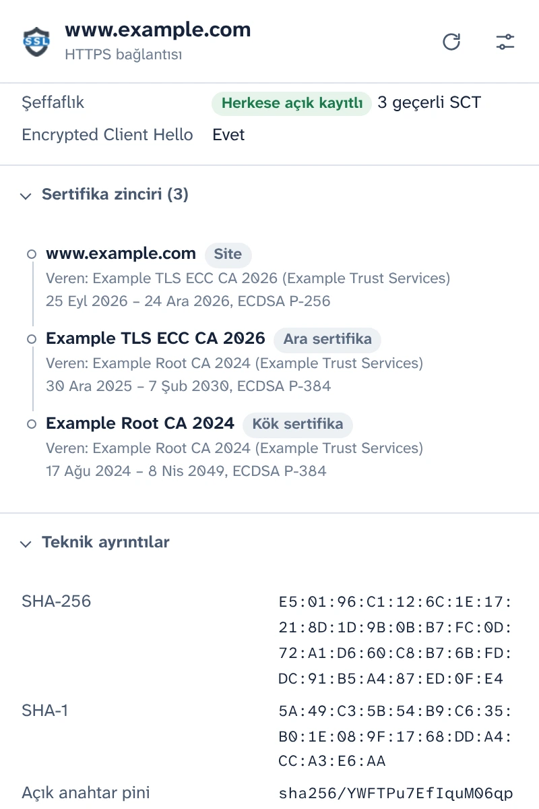
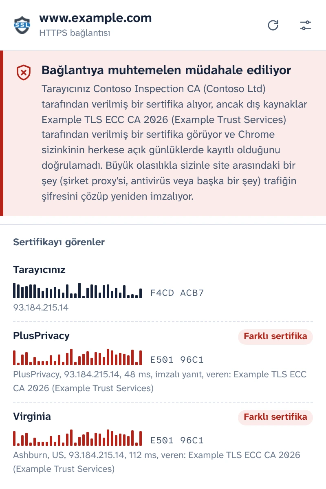
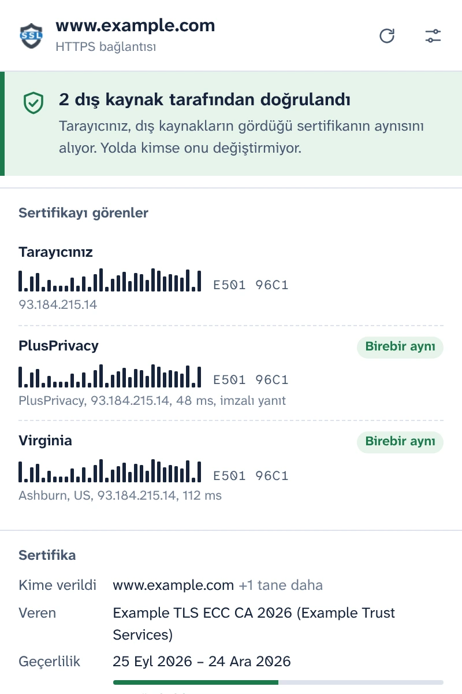
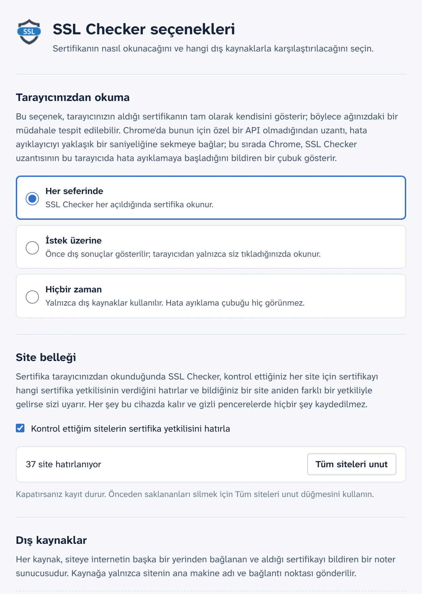

Tarayıcınızın gerçekten aldığı sertifikayı görün
SSL Checker, sekmenizdeki sitenin sertifikasını doğrudan Chrome'dan okur ve bağımsız noterlerin internetin başka yerlerinden gördüğüyle karşılaştırır. İkisi farklıysa sizinle site arasındaki bir şey sertifikayı değiştiriyor.
Ücretsiz ve açık kaynaklı. Hesap yok, analitik yok.
2 dış kaynak tarafından doğrulandıBağlantıya muhtemelen müdahale ediliyor
Tarayıcınız, dış kaynakların gördüğü sertifikanın aynısını alıyor. Yolda kimse onu değiştirmiyor.Tarayıcınız Contoso Inspection CA tarafından verilmiş bir sertifika alıyor, ancak dış kaynaklar Example TLS ECC CA 2026 tarafından verilmiş bir sertifika görüyor.
- Tarayıcınız E501 96C1F4CD ACB7
- PlusPrivacy Birebir aynıFarklı sertifika E501 96C1
- Virginia Birebir aynıFarklı sertifika E501 96C1
Bağlantının tüm ayrıntıları
Chrome'un bu sekme için aldığı her şey; bir sunucudan yeniden indirilmez, doğrudan tarayıcının kendisinden okunur.
- Kapsanan adlar, veren, geçerlilik ve kalan gün sayısı, doğrulama düzeyi (DV, OV, EV)
- TLS sürümü, kuantum sonrası hibritler dahil anahtar değişimi, şifreleme ve Encrypted Client Hello
- Certificate Transparency durumu ve imzalı sertifika zaman damgaları
- Tam zincir, parmak izleri ve tüm uzantılar. PEM'i kopyalayın veya zinciri indirin.

HTTPS trafiğine müdahaleyi yakalayın
Şirket proxy'leri, antivirüslerin HTTPS taraması ve herkese açık Wi-Fi ağlarındaki saldırganlar aynı şekilde çalışır: Trafiğinizin şifresini çözer ve tarayıcınıza kendi sertifikalarını verirler. Sayfa normal görünür ve asma kilit yerinde kalır.
SSL Checker, PlusPrivacy noterine ve eklediğiniz her notere aynı sitenin onlara hangi sertifikayı gösterdiğini sorar. Noterler, ağınızda ne varsa onu atlayarak internetin başka yerlerinden bağlanır ve parmak izleri karşılaştırılır:
- Her yerde aynı sertifika: doğrulandı.
- Sizinki farklı ve herkese açık kayıtlı değil: Bağlantıya muhtemelen müdahale ediliyor. SSL Checker, yerine konan sertifikayı veren yetkiliyi adıyla belirtir ve bilinen denetim ürünlerini tanır.
- Kaynaklar birbiriyle uyuşmuyor: Bu durum, her olasılığın ne anlama gelebileceğiyle birlikte olduğu gibi bildirilir.

Yolda kimsenin taklit edemeyeceği yanıtlar
Trafiğinize müdahale eden bir şey, bir noter adına yanıt vermeyi de deneyebilir. Ancak bunu başaramaz: PlusPrivacy noteri her yanıtı Ed25519 ile imzalar; SSL Checker da imzayı, her soruyla gönderilen rastgele bir sayıyı ve sorduğu siteyi doğrular. Sahte, tekrar oynatılmış veya başka yere yönlendirilmiş bir yanıt reddedilir ve açılır pencere, yanıtı bir şeyin değiştirdiğini bildirir.
Kendi noterinizi çalıştırın
Noter açık kaynaklıdır: Docker için küçük bir Node.js hizmetidir ve istek sellerine ve özel ağlara yönelik isteklere karşı korumalıdır. Herhangi bir sunucuya kurun, adresini ve anahtarını Seçenekler'de ekleyin; yanıtları da aynı şekilde doğrulanır.

Hata ayıklayıcı ne zaman çalışsın, siz seçin
Chrome'da yüklenmiş bir sayfanın sertifikası için bir uzantı API'si yoktur. Bu nedenle SSL Checker, sertifikayı okurken Chrome'un hata ayıklayıcısını yaklaşık bir saniyeliğine sekmeye bağlar ve Chrome bu sırada hata ayıklama çubuğunu gösterir. Bunun ne zaman olacağını Seçenekler'de siz seçersiniz:
- Her seferinde: açılır pencereyi her açtığınızda
- İstek üzerine: açılır pencerede tek tıklamayla
- Hiçbir zaman: yalnızca noterlere sorulur
Kontrol ettiğiniz siteleri hatırlar
SSL Checker her sitenin hangi sertifika yetkilisini kullandığını hatırlar ve bildiğiniz bir site aniden farklı bir yetkiliyle gelirse, örneğin yeni bir Wi-Fi ağında, sizi uyarır. Bu bellek cihazınızda kalır, gizli pencerelerde hiçbir zaman kullanılmaz ve Seçenekler'de kapatılabilir veya silinebilir.

Gizlilik odaklı tasarım
- Açılır pencerede kabul edene kadar hiçbir şey okunmaz veya gönderilmez.
- Cihazınızdan yalnızca sitenin ana makine adı ve bağlantı noktası çıkar; bunlar, kullandığınız noterlere giden bir HTTPS isteğinin gövdesinde gönderilir.
- PlusPrivacy noteri, kontrol edilen sitelerin kaydını tutmaz. Bu noteri kapatabilir veya yalnızca kendi çalıştırdığınız noterlere sorabilirsiniz.
- Analitik yok, izleme yok, hesap yok. Site belleği cihazınızdan hiçbir zaman çıkmaz.
- Bu web sitesinde de analitik yoktur ve site başka sunuculardan hiçbir şey yüklemez.
POST /v1/cert
Content-Type: application/json
{
"host": "www.example.com",
"port": 443,
"nonce": "Xq3MpTb0vR9kLs2eWn5yZA"
}